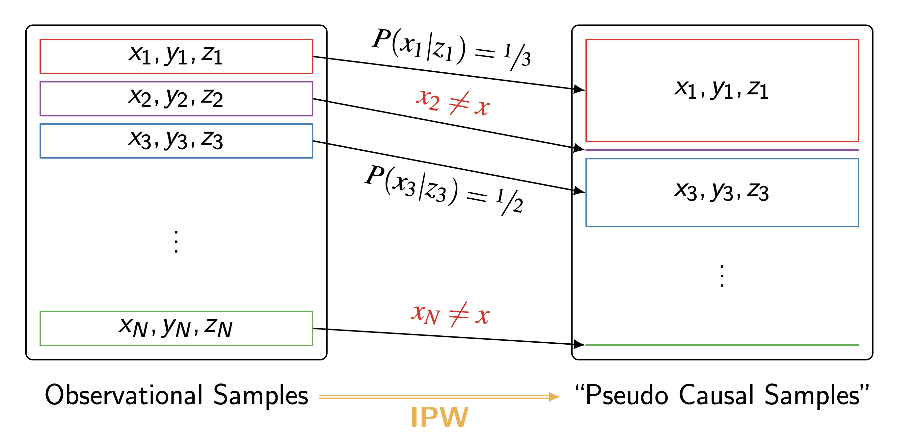

1 Overview
- 지난 포스트에서는 Back-door Criterion을 통해 어떤 공변량 집합 \(Z\)를 보정(Adjustment)해야 인과 효과 \(P(y|do(x))\)를 식별할 수 있는지 알아보았습니다.
\[P(y|do(x)) = \sum_{z} P(y|x,z)P(z)\]
- 이번 포스트에서는 이 식을 실제 데이터(Practice)에서 어떻게 평가하고 계산하는지, 특히 계산 복잡도 문제를 해결하기 위한 Inverse Probability Weighting (IPW) 기법에 대해 다룹니다.
2 The Challenge of Evaluation
- Back-door criterion을 만족하는 집합 \(Z\)를 찾았다면, 이론적으로는 위의 식을 통해 인과 효과를 계산할 수 있습니다.
- 하지만 실제 적용 시에는 두 가지 큰 난관에 부딪힙니다.
- Estimation: \(P(y|x,z)\)와 \(P(z)\)와 같은 분포들을 데이터로부터 각각 추정해야 합니다.
- Computational Complexity: 만약 보정해야 할 변수 집합 \(Z\)가 고차원(High-dimensional)이라면, \(Z\)의 모든 조합에 대해 합(Summation)을 구하는 것은 매우 어렵습니다. \(Z\)의 차원이 늘어날수록 계산 복잡도는 지수적으로 증가(\(O(exp(|Z|))\))하기 때문입니다.
- 이 문제를 해결하기 위해 우리는 식을 변형하여 IPW (Inverse Probability Weighting) 방식을 도입합니다.
3 Inverse Probability Weighting (IPW)
3.1 Derivation
- 기존의 Back-door Adjustment 식을 베이즈 정리와 결합 확률 법칙을 이용해 재구성해 봅시다.
\[ \begin{align} P(y|do(x)) &= \sum_{z} P(y|x,z)P(z) \\ &= \sum_{z} \frac{P(y,x,z)}{P(x,z)} P(z) \\ &= \sum_{z} \frac{P(y,x,z)}{P(x|z)P(z)} P(z) \\ &= \sum_{z} \frac{P(y,x,z)}{P(x|z)} \quad \end{align} \]
- 이제 우리는 \(P(z)\)를 따로 추정하거나 모든 \(z\)에 대해 합을 구할 필요 없이, 결합 확률 \(P(y,x,z)\)를 \(P(x|z)\)로 나눈 형태로 식을 단순화했습니다.
3.2 Propensity Score \(g(z)\)
- 위 식의 분모에 있는 \(P(x|z)\)는 공변량 \(Z\)가 주어졌을 때 원인 변수 \(X\)가 할당될 확률을 의미하며, 이를 Propensity Score라고 부릅니다.
- 보통 \(g(z)\)로 표기하며 로지스틱 회귀(Logistic Regression) 등의 모델을 사용하여 추정합니다.
\[g(z) = P(X=x|Z=z)\]
4 Estimating from Samples
- 이제 \(N\)개의 관측 데이터 샘플이 주어졌을 때, 위 식을 표본 평균(Sample Mean) 형태로 근사해 보겠습니다.
\[ \begin{aligned} P(y|do(x)) &\approx \sum_{z} \frac{\frac{1}{N} \sum_{i=1}^{N} \mathbb{1}(y_i=y, x_i=x, z_i=z)}{g(z)} \\ &= \frac{1}{N} \sum_{i=1}^{N} \sum_{z} \frac{\mathbb{1}(y_i=y, x_i=x, z_i=z)}{g(z)} && \text{Swap Summation} \\ &= \frac{1}{N} \sum_{i=1}^{N} \frac{\mathbb{1}(y_i=y, x_i=x)}{g(z_i)} && \text{Collapse Sum over } Z \end{aligned} \]
여기서 \(\mathbb{1}(\cdot)\)은 지시 함수(Indicator function)로, 괄호 안의 조건이 참이면 1, 거짓이면 0을 반환합니다.
기대값(Expectation) 관점에서 \(\mathbb{E}[Y|do(x)]\)를 구한다면 식은 다음과 같이 정리됩니다.
\[ \begin{aligned} \mathbb{E}[Y|do(x)] &= \sum_{z, y} \frac{y \cdot P(y, x, z)}{P(x|z)} \\ &\approx \sum_{z, y} \frac{y \cdot \frac{1}{N} \sum_{i=1}^{N} \mathbb{1}(y_i=y, x_i=x, z_i=z)}{g(z)} \\ &= \frac{1}{N} \sum_{i=1}^{N} \sum_{z, y} \frac{y \cdot \mathbb{1}(y_i=y, x_i=x, z_i=z)}{g(z)} && \text{Swap Summation} \\ &= \frac{1}{N} \sum_{i=1}^{N} y_i \frac{\mathbb{1}(x_i=x)}{g(z_i)} && \text{Collapse Sum over } Z, Y \end{aligned} \]
4.1 핵심 포인트
- \(\mathbb{1}(\cdot)\) (Indicator Function): 조건이 참이면 1, 거짓이면 0을 반환하는 함수입니다.
- 시간 복잡도 \(O(N)\): 가장 마지막 식을 보면, 더 이상 \(Z\)의 모든 조합에 대해 합을 구할 필요가 없습니다. 단순히 관측된 \(N\)개의 데이터 샘플을 한 번씩만 순회하며 가중치(\(1/g(z_i)\))를 더하면 계산이 끝납니다. 이것이 IPW가 강력한 이유입니다.
4.2 시간 복잡도의 개선
- 이 방식의 가장 큰 장점은 계산 효율성입니다.
- 고차원 \(Z\)에 대해 적분하거나 합을 구하는 대신, 샘플 수 \(N\)에 비례하는 선형 시간(\(O(N)\)) 만에 계산이 가능합니다.
5 Average Treatment Effect (ATE) with IPW
- 일반적으로 우리가 가장 관심을 가지는 것은 처치(Treatment, \(X=1\))와 통제(Control, \(X=0\)) 간의 평균적인 차이인 ATE입니다.
- IPW를 이용한 ATE 추정량은 다음과 같습니다.
\[ \begin{align} \hat{ATE} &= \hat{\mathbb{E}}[Y|do(X=1)] - \hat{\mathbb{E}}[Y|do(X=0)] \\ &= \frac{1}{N} \sum_{i=1}^{N} \left( \frac{y_i x_i}{g(z_i)} - \frac{y_i (1-x_i)}{1 - g(z_i)} \right) \end{align} \]
- \(X_i=1\)인 샘플(Treatment group)은 \(1/g(z_i)\)의 가중치를 갖습니다.
- \(X_i=0\)인 샘플(Control group)은 \(1/(1-g(z_i))\)의 가중치를 갖습니다.
6 Intuition: Pseudo Causal Samples
- IPW가 작동하는 원리를 직관적으로 이해하기 위해 “가상의 인과 샘플(Pseudo Causal Samples)” 개념을 살펴봅시다.

- Observational Data: 현실 데이터에서는 \(Z\)의 특성에 따라 \(X\)를 선택할 확률(\(P(x|z)\))이 다릅니다 (Selection Bias).
- Weighting: \(X\)가 일어날 확률이 낮았던(\(P(x|z)\)가 작은) 샘플일수록, 역수(\(1/P(x|z)\))를 취하면 가중치가 커집니다.
- 예를 들어, \(P(x_1|z_1) = 1/3\)이었다면, 이 샘플은 가중치를 통해 3배로 부풀려집니다.
- Pseudo Population: 이렇게 가중치를 적용하면, 마치 모든 샘플이 편향 없이 고르게 처리(\(X\))를 받은 것과 같은 가상의 모집단이 형성됩니다.
- 결과적으로 IPW는 교란 변수 \(Z\)가 \(X\)에 미치는 영향을 역확률 가중치로 상쇄시켜, \(X\)와 \(Z\)의 연결 고리를 끊어내는(Do-operator와 유사한) 효과를 냅니다.
Summary: 복잡한 인과 그래프에서 Back-door criterion을 만족하는 변수들을 찾아냈다면, IPW는 이를 실제로 계산 가능하게 만들어주는 강력한 도구입니다. Propensity Score \(g(z)\)만 정확히 모델링할 수 있다면, 우리는 선형 시간 내에 인과 효과를 추정할 수 있습니다.